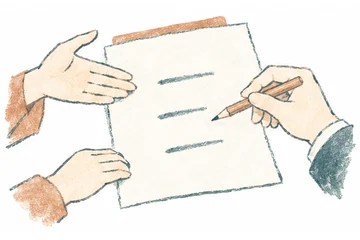
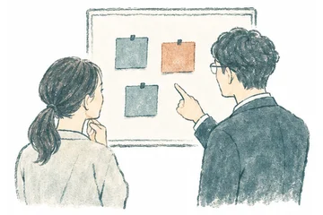

01WORK RULES
就業規則・
社内ルール
「今の働き方に、社内ルールが合っているか見直したい。」
勤怠、休暇、在宅勤務など、決まりと実際の運用がずれているところから整理します。
01TK CONSULTING
経営者・人事労務ご担当者さまへ
就業ルールの見直しから、日々の労務管理、評価・賃金制度まで。現場でいま起きていることを一緒に整理し、何から手をつけるかを考えます。
SUPPORT THEMES
制度を整えたいときも、日々の判断に迷ったときも。まずは身近な課題からお聞かせください。
01WORK RULES
「今の働き方に、社内ルールが合っているか見直したい。」
勤怠、休暇、在宅勤務など、決まりと実際の運用がずれているところから整理します。
02DAILY LABOR
「勤怠や休職のことで、どう対応するか迷っている。」
個別の事例や日常の運用で困っていることを伺い、何から確認するかを一緒に考えます。
03PEOPLE SYSTEMS

「評価や給与の決め方を、社員に説明できる形にしたい。」
会社が大切にしたいことと現場の実情を踏まえ、評価や賃金の仕組みを見直す際の論点を整理します。
04ORGANIZATION

「担当者が変わっても、仕事が回る仕組みにしたい。」
役割分担や引き継ぎの流れを見直し、現場で無理なく続けられる運用を考えます。
HOW WE WORK
制度をつくることだけでなく、現場で使い続けられることを大切にしています。
いま困っていることや、見直したい仕組みをお聞かせください。
経営側の考えと現場の状況を伺い、優先して考えることを確認します。
相談内容に応じて対応できる範囲と進め方をお伝えし、次の一歩を一緒に考えます。
CONTACT
相談内容がまとまっていなくても大丈夫です。「どこから見直せばいいか分からない」という段階でも、今の状況をお聞かせください。
人事・労務の相談フォームへ